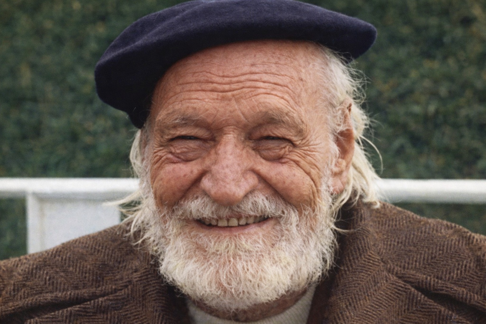
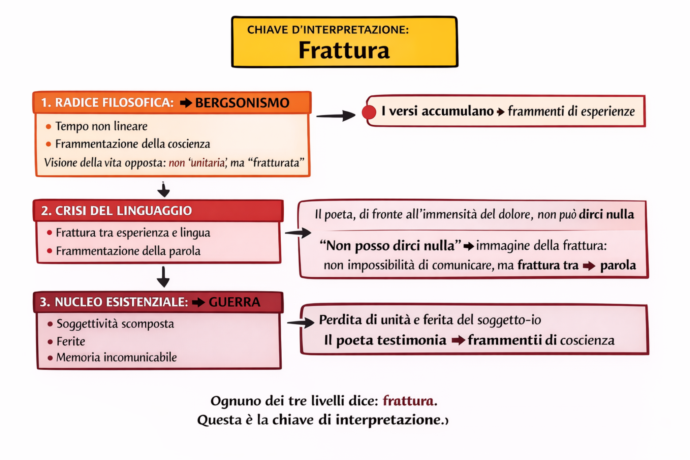
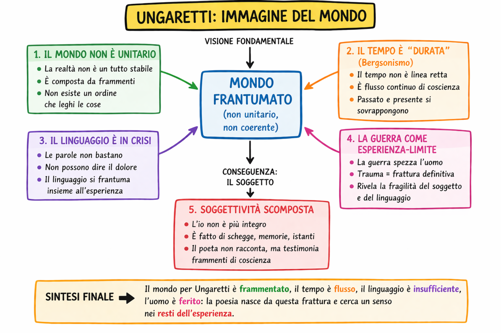
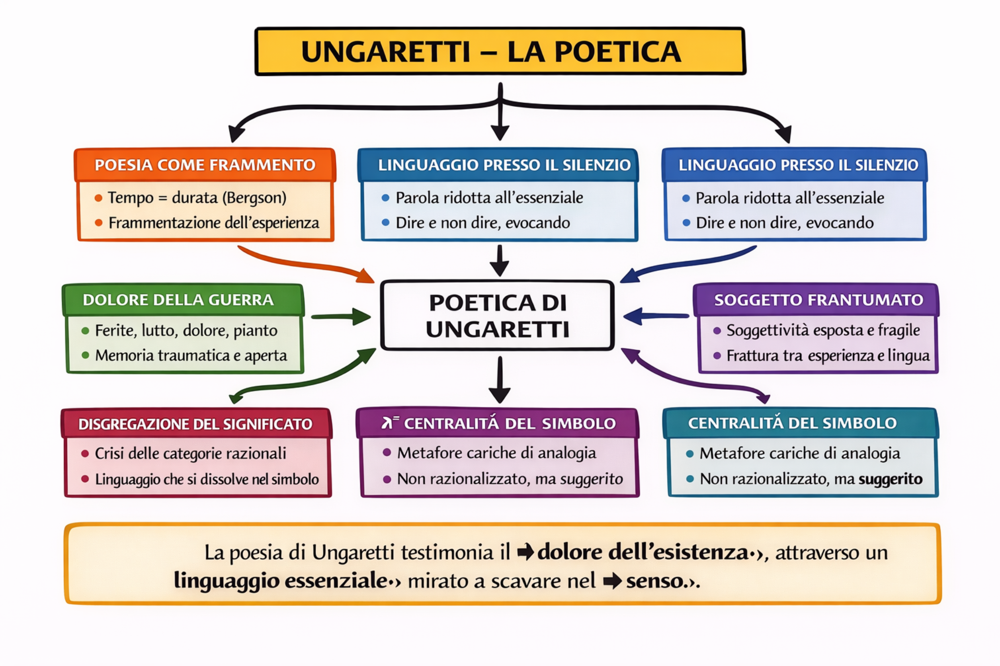
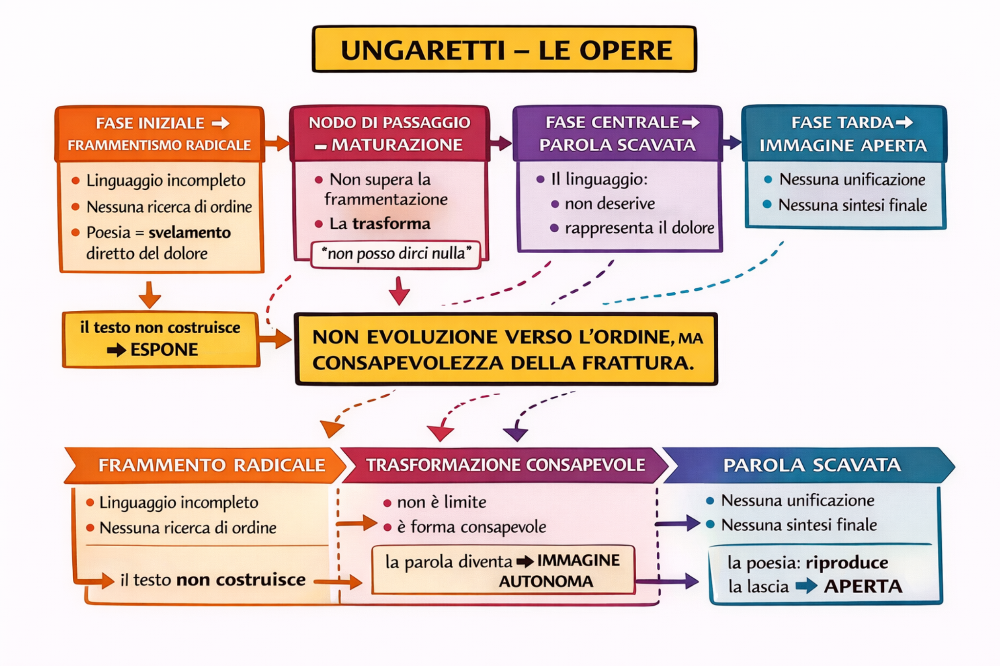

Schema
Ungaretti – Filosofia base
Bergsonismo, durata, simbolismo, parola scavata.
Questa PWA prende come modello l’impostazione didattica della PWA su Primo Levi: percorso per lezioni autonome, grafica sobria, evidenziazione persistente, appunti integrati, immagini apribili a tutto schermo e modalità concentrazione. Qui quella struttura viene rifatta per Ungaretti, con un tono visivo coerente ma non copiato: più rarefatto, più essenziale, più vicino alla sua poesia.

Bergsonismo, durata, simbolismo, parola scavata.
Apri pagina →Guerra, trauma, scomposizione, dolore, memoria.
Apri pagina →Vuoto, sospensione, silenzio, corpo, simbolo.
Apri pagina →Riduzione del linguaggio, frammento, trauma, scavo.
Apri pagina →Frammentismo, maturazione, parola scavata, evoluzione.
Apri pagina →La poesia come svelamento, processo, simbolo, dolore.
Apri pagina →Bergsonismo, durata, simbolismo, parola scavata.

Guerra, trauma, scomposizione, dolore, memoria.

Vuoto, sospensione, silenzio, corpo, simbolo.

Riduzione del linguaggio, frammento, trauma, scavo.

Frammentismo, maturazione, parola scavata, evoluzione.

La poesia come svelamento, processo, simbolo, dolore.